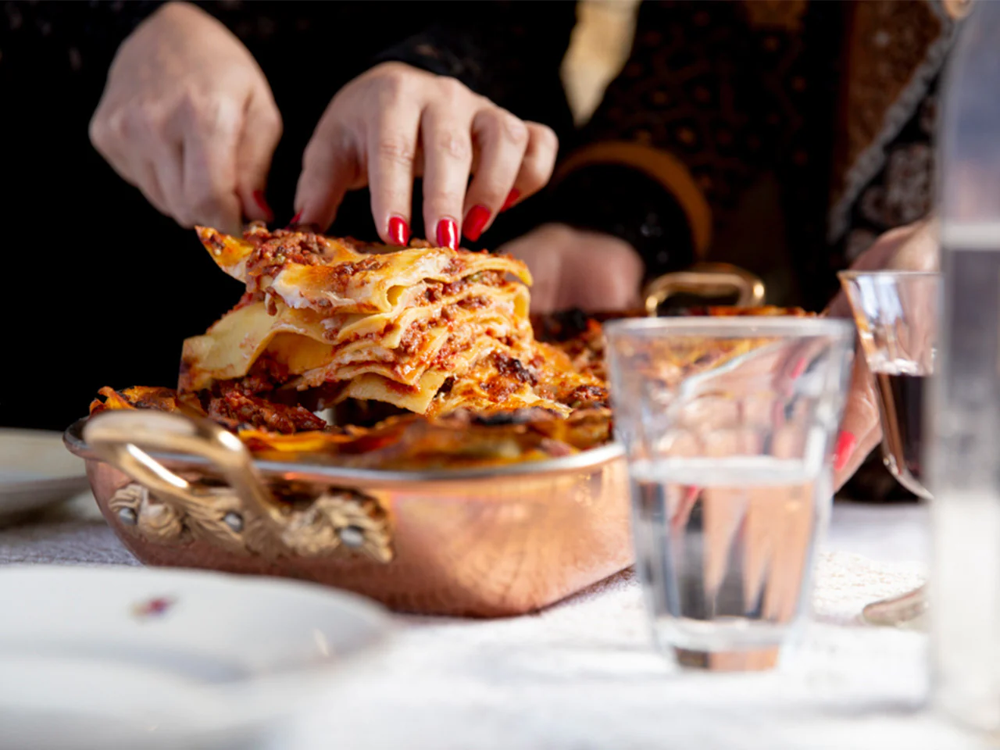

Italian Lasagna Recipe

Description
Today, let’s talk about a recipe that is very near and dear to my heart, my Nonna’s lasagna. This recipe has three main components, a slow-cooked ragu, a creamy bechamel sauce, and fresh homemade pasta sheets. Something extraordinary happens in the oven when these ingredddients are layered with fresh mozzarella, Parmigiano, and hard-boiled eggs. You’ll just have to make it yourself to experience this magic.
Ingridients:
- Butter, for greasing
- 2 ½ cups Lady Caterina’s Ragù (link pt trimis in pag)
- 1 pound fresh mozzarella, torn into 1-inch pieces
- 3 hard-cooked eggs, finely chopped
- 2 cups bechamel
- 2 cups finely grated Parmigiano-Reggiano
- Sfoglia all’Uovo, cut into 4 sheets measuring the size of your baking dish, or about a pound of store-bought pasta sheets
Steps
- Preheat the oven to 375ºF. Grease a 9- x 13-inch baking dish with butter.
- Spoon a ½ cup layer of ragù on the bottom of the baking dish. Place a pasta sheet on top. There’s no need to cook the pasta in advance. It will cook in the juices of the ragù. Spoon another ½ cup of ragù over the pasta. Distribute ¼ of the mozzarella, ¼ of the chopped eggs, ½ cup of bechamel, and ½ cup of Parmigiano-Reggiano evenly over the tray. Repeat the pasta, ragù, mozzarella, egg, béchamel, and Parmigiano-Reggiano layering three more times. Layer the remaining ragù, mozzarella, bechamel, and Parmigiano-Reggiano over the final pasta layer.
- Cover the baking dish with aluminum foil and bake for 30 minutes. Uncover the baking dish, then continue baking until the edges of the pasta are curled up and browned, 30 to 40 more minutes.
- Allow the lasagna to rest for about 30 minutes before serving in slices.
Lady Caterina’s Ragu - Serves 4 to 6
- 1 white onion, diced
- 2 celery stalks, diced
- 2 Carrots, peeled and diced
- 3 tablespoons extra-virgin olive oil
- Sea salt
- ¾ cup fresh or frozen peas
- 1 fresh sweet Italian sausage link
- 2 pounds ground beef
- 1 cup diced mushrooms (I like shitake)
- ¾ cup dry white wine
- 1 tablespoon finely chopped parsley
- 1 (14.5-ounce) can whole peeled tomatoes
- ½ cup freshly and finely grated Parmigiano-Reggiano
Method
- Heat the onions, celery and carrots in olive oil in a large pan over a medium-low flame.
- Once the beef begins to release its juices, add the wine and simmer until the alcohol aroma dissipates and the liquid is reduced by about ⅓, about a minute. Season the beef with a flurry of parsley, then add the tomatoes, pressing them into the meat with the back of a wooden spoon or with a potato masher until they are incorporated with the meat sauce. Turn the flame down to low and simmer, covered, for 1 ½ hours.
Bechamel Recipe - Makes about 2 cups
- 2 tablespoons butter
- 2 tablespoons all-purpose flour
- 2 ½ cups whole milk, warmed
- Sea salt
- Freshly ground black pepper
Method
- Melt the butter until frothy in a small saucepan over medium heat. Whisk in the flour with the passion of an Italian until the mixture smells nutty, about 3 minutes. Add the milk and continue whisking until the mixture coats the back of a spoon, about 3 minutes more. Season to taste with salt and a scrunch of pepper.